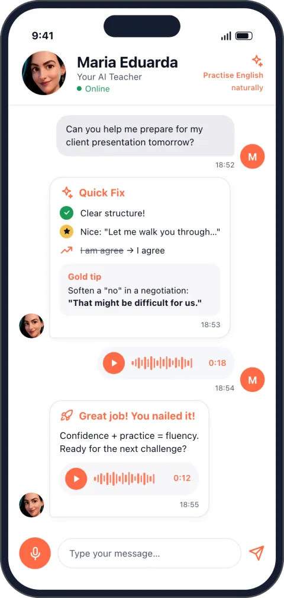
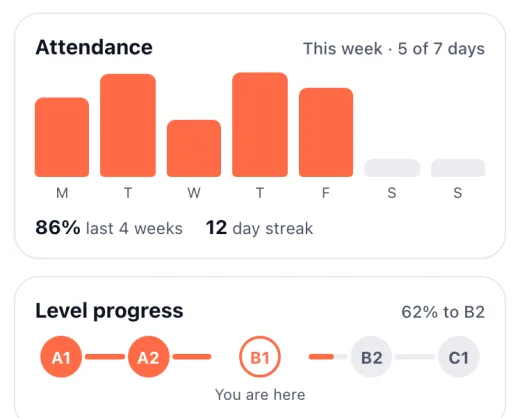
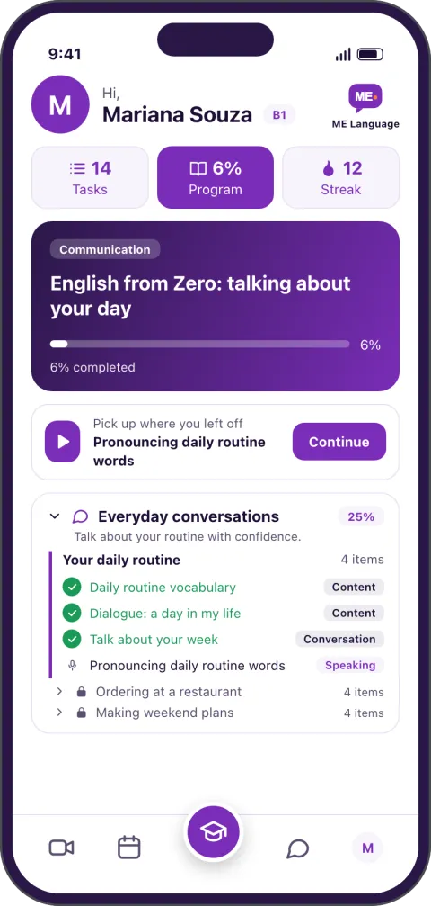
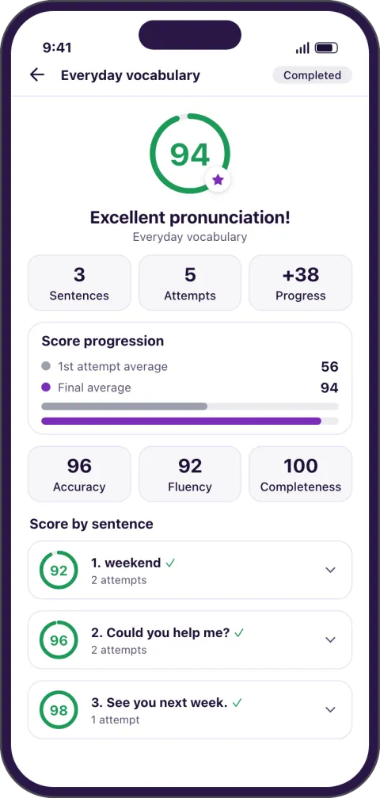
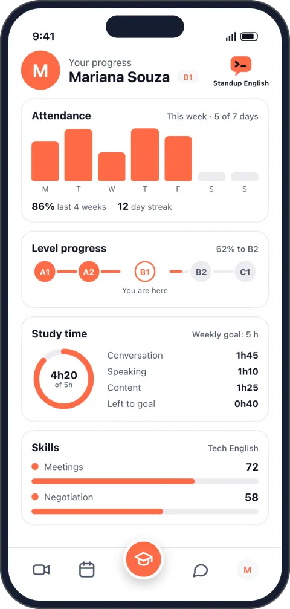

Fale todo dia.
A AI Teacher fica disponível 24 horas, no seu celular.
$ standup --english · Um percurso de inglês para o seu sucesso de carreira
Treine a fala todo dia com a Duda, a AI Teacher da professora Maria Eduarda Moraes, ensaie a daily, a entrevista e o call e tenha feedback humano todo mês.
Quero começarR$ 97 por mês · 7 dias de garantia
Por Maria Eduarda Moraes, 20 anos dando aula de inglês.


Você sabe o que fez ontem, mas resume tudo em "it's ok".
O recrutador de fora chama para a entrevista e você adia.
Explicar o bug ao vivo dá branco, então você escreve.
Não é falta de inglês. É falta de prática de fala.
No Standup English você fala todos os dias. Conversa por voz com a AI Teacher, a qualquer hora, e é corrigido enquanto fala.
Antes da daily, da entrevista ou do call, você roda o simulado. Erra com a IA, ajusta e chega pronto.
Pratique a fala do seu trabalho até ela sair no automático.
Você fala, ela responde falando e corrige pronúncia, gramática e vocabulário na hora.
Daily, entrevista técnica, explicar um bug, apresentar uma entrega. Ensaie antes de acontecer.
30 minutos com a Maria Eduarda para olhar os seus resultados e ajustar o plano.
A metodologia de simulados da Maria Eduarda: você entra na situação real do trabalho, com role play e sotaques diferentes.
$ simulado --entrevista-tecnica --sotaque indianoExplique para o entrevistador como você resolveu um bug.
$ simulado --dailyO que você fez ontem, o que vai fazer hoje e o que está travando.
$ simulado --call-clienteApresente uma entrega e negocie um prazo.
$ simulado --small-talkOs 5 minutos antes da reunião começar, sem silêncio constrangedor.
A AI Teacher fica disponível 24 horas, no seu celular.
Pronúncia, gramática e vocabulário corrigidos enquanto você fala.
Veja a nota da sua pronúncia, frase a frase.
Ninguém na sua frente. As gravações de speaking são apagadas em 30 dias.
As atividades se adaptam ao seu desempenho, ao seu ritmo e ao tema do seu trabalho.
Notas, tempo de estudo, frequência e evolução de nível.
O app com a marca Standup English. Telas ilustrativas.



Telas ilustrativas.
A Duda é a AI Teacher do Standup English, com o rosto, a voz e o jeito de ensinar da professora Maria Eduarda. Ela conversa com você em inglês por voz, a qualquer hora, e corrige você enquanto você fala.
R$ 97 por mês. Você entra a qualquer dia, sem esperar turma. [[FALTA: como o aluno recebe o acesso ao app depois do pagamento]]
Converse com a AI Teacher no seu horário e siga o programa de inglês para tech.
Daily, entrevista, call com cliente. Ensaie antes de acontecer.
30 minutos com a Maria Eduarda para ver a sua evolução e ajustar o plano.
A Maria Eduarda Moraes dá aula de inglês há 20 anos e criou o próprio material, com o inglês do dia a dia, dos negócios e das viagens.
A metodologia dela é simulação: em vez de decorar, você entra na conversa real e treina até ela sair. [[VALIDAR: experiência com alunos de empresas europeias, se puder citar]]
[[FALTA: depoimento real e autorizado do aluno 1]]
[[FALTA: depoimento real e autorizado do aluno 2]]
[[FALTA: depoimento real e autorizado do aluno 3]]
Garantia: 7 dias para desistir e receber o seu dinheiro de volta.
Para quem trabalha com tecnologia (dev, dados, produto, QA, suporte) e lê inglês, mas trava para falar na daily, na entrevista ou no call com o time de fora. [[VALIDAR: nível mínimo de entrada]]
Uma vez por mês você tem uma reunião de feedback de 30 minutos com a Maria Eduarda. Ela olha os seus resultados no app e planeja os próximos passos com você.
R$ 97 por mês, sem fidelidade: cancele quando quiser. E você tem 7 dias para desistir e receber o dinheiro de volta.
Não. O app e a AI Teacher ficam disponíveis 24 horas. Só a reunião mensal de feedback é marcada com a Maria Eduarda.
Erre à vontade: o treino é com a IA, não com o seu cliente. As gravações de speaking são apagadas em 30 dias.
São conversas que imitam situações reais do trabalho: a daily, a entrevista técnica, explicar um bug, apresentar uma entrega. Você ensaia antes de acontecer, com diferentes sotaques do inglês.
A Maria Eduarda também dá aulas particulares: R$ 450 por mês no plano de 6 meses ou R$ 400 por mês no plano anual. Pergunte na reunião de feedback.
Quando quiser, sem multa. E nos 7 primeiros dias você desiste e recebe o dinheiro de volta. [[FALTA: onde o aluno cancela]]
Treino de fala todo dia, simulados de tech e feedback humano todo mês. 7 dias de garantia.
Quero começarR$ 97 por mês
Dúvidas antes de começar? Fale com a Maria Eduarda no WhatsApp.
git commit -m "agora eu falo"